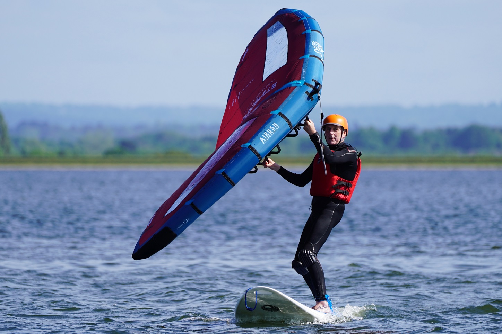
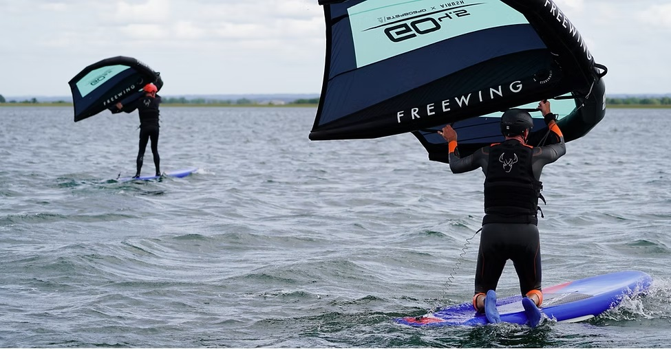
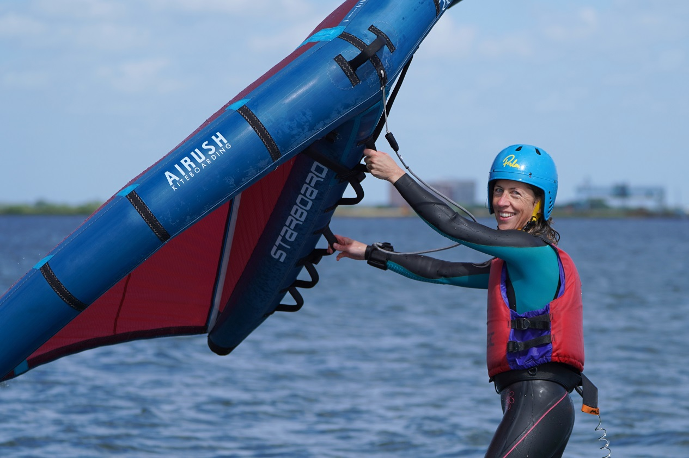

Welcome to WingFoiling
Winging is the new, exciting discipline to arrive in the world of watersports and uses a lightweight, inflatable wing with handles. WingSURFing refers to the use of the wing on either a stand-up paddleboard (SUP) with a centre fin or a high-volume windsurf board with a daggerboard. WingFOILing refers to the use of the wing on a specific wingfoil board with a hydrofoil attached to the underside. This allows the board to rise up out of the water as it moves forwards and foiling occurs. Foiling above the water feels exciting yet relaxing at the same time. As the foil cuts smoothly through the water, the usual noise and bumping of the board on choppy water all but disappears and the sensation of gliding is second-to-none.
Quick to learn
Wingfoiling is relatively easy to master, typically with a much faster learning curve than other watersports. It is safer and more accessible than kitesurfing as the wing can be de-powered easily or let go of at any time. The benefits of winging over windsurfing include having a greater wind range for each wing (so less kit is needed) and easier storage and transportation of the equipment as it packs away smaller (no long masts and much shorter boards).
No experience required
No previous watersports experience is required to learn to wingsurf or wingfoil. The pathway is to learn to wingsurf first and then to wingfoil. Some people may choose to stick with wingsurfing and to enjoy the feeling of being powered along by the wing whilst remaining on the water rather than above it.
Most people, however, are keen to progress to wingfoiling as soon as possible. Depending on their previous watersports experience and their balance, wind awareness and fitness level, beginners are likely to need 1, 2 or 3 lessons in wingsurfing before moving onto a foil board. Previous experience that can contribute towards a quicker progression includes:
- Sailing, windsurfing or kiting: for wind awareness
- SUP, skateboarding or snowboarding: for balance
- Windfoiling (foiling on a windsurf board), tow-foiling (foiling whilst being pulled behind a powerboat) or dinghy foiling: for transferrable foiling technique

Learn to Wingfoil at QMSC with Simon Winkley Marine:
Lessons are of 3 hours duration on a 1:2 ratio for maximum instructor input with powerboat support to help save time getting back upwind during the early stages. Each session starts with a short introduction to kit and technique before heading out onto the water. Please note that tow-foiling is not done at QM as a light-wind option. Sessions booked will only be confirmed to run when enough wind is forecast.
Participants should provide their own wetsuit and suitable watersports shoes. 4/3mm wetsuits may be able to be supplied on request yet these are suitable for Spring, Summer and Autumn. 6/5mm winter wetsuits are recommended in colder weather. Buoyancy aids and helmets are compulsory for all winging lessons and are provided.
Winging at QMSC is run all year round by our partner Simon Winkley Marine, using the very latest wings, boards and foils from Starboard/Airush. As the kit is refreshed regularly, used kit is often available for those that wish to progress towards owning their own kit. For the latest availability please visit: https://www.simonwinkley.com/kit-for-sale/
Lessons will be delivered either by RYA Wing Instructors Simon, Julia, Paul or Jerome. Lessons are available all year round with better availability on weekdays. Timings in the main season are: 1000–1300 and 1400–1700, with adjustments made when daylight hours are less in the winter.

Online Booking
Wing lessons are bookable by either contacting Simon Winkley Marine directly on info@simonwinkley.com or booking online at https://www.simonwinkley.com/wingfoiling — follow the link for availability and prices.
Find out more
Please send a message to Simon Winkley Marine now: info@simonwinkley.com. Simon also runs overseas windsurfing and wingfoiling clinics — visit his website to find out more: www.simonwinkley.com
Join QMSC as a member with your own kit and Wingfoil all year round. Click here to find out more about membership
